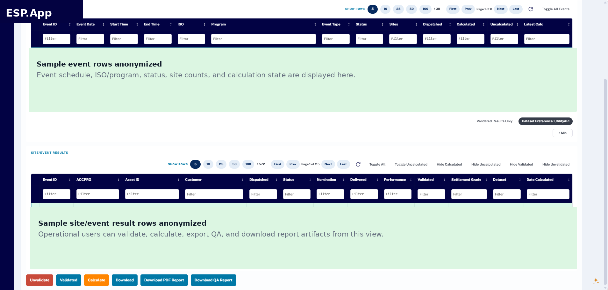
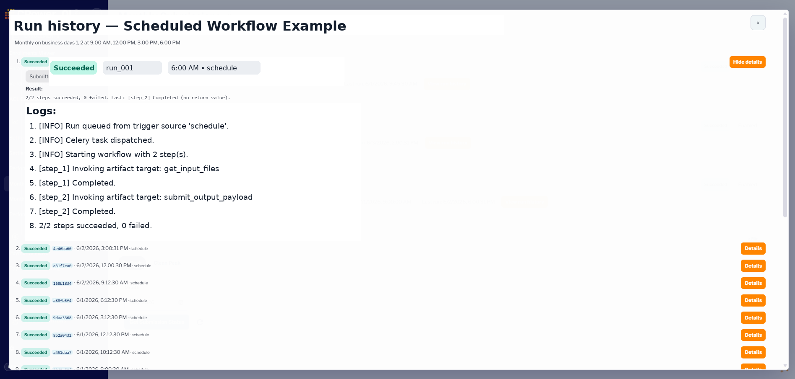
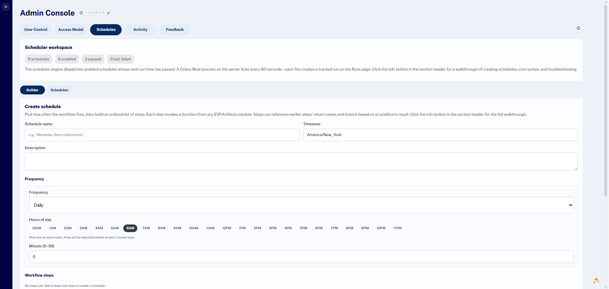
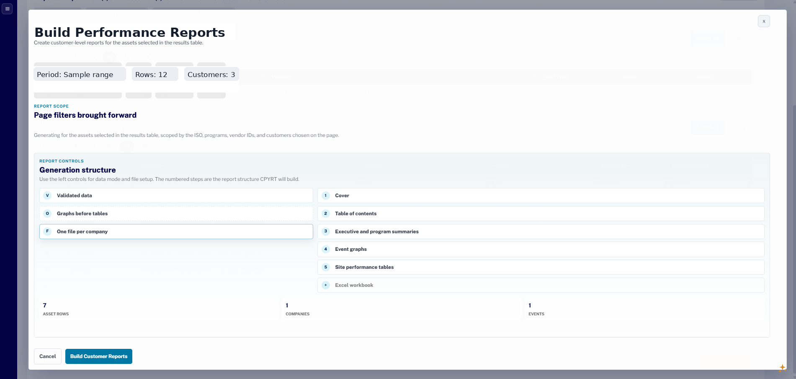
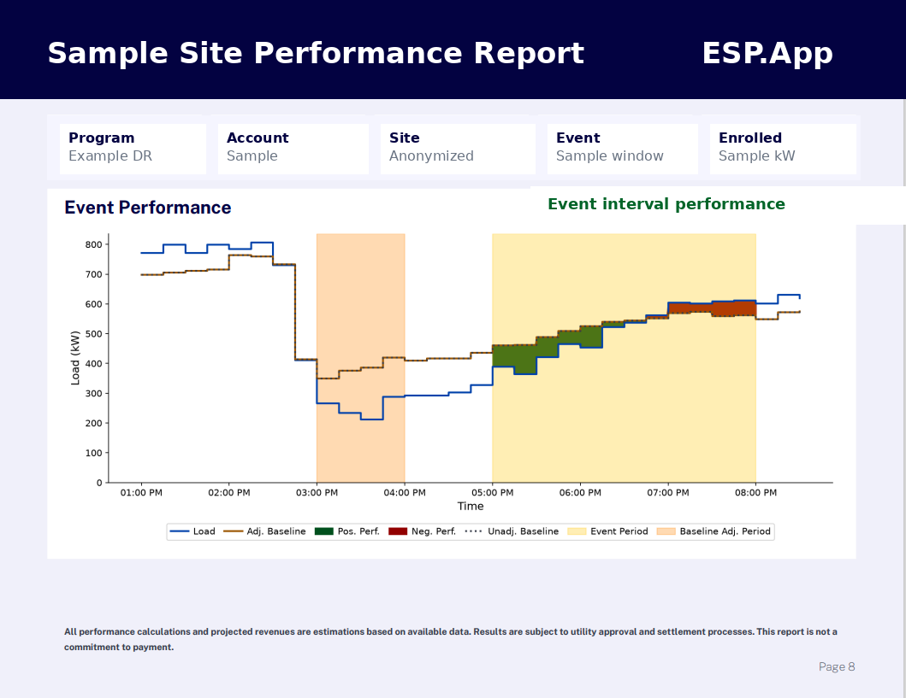
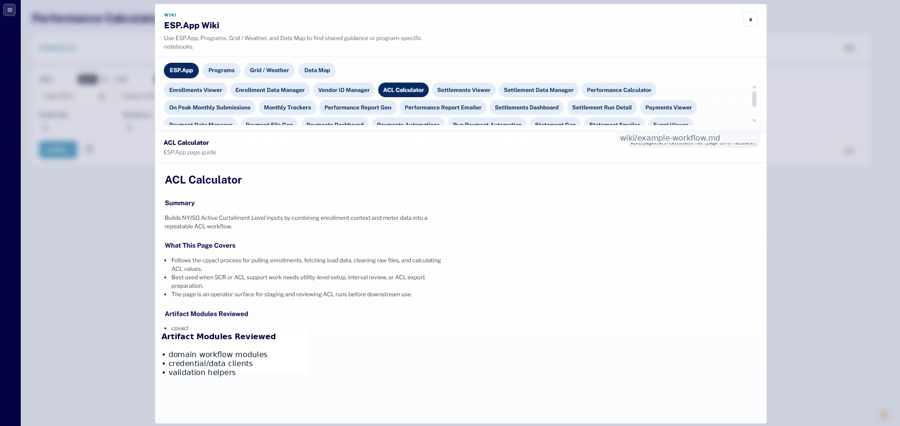
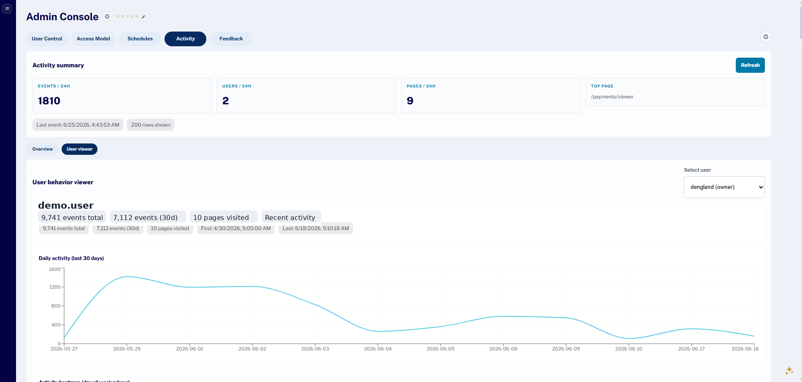

Product
ESP.App case study
Tyler Sims
Forward-Deployed Data Scientist & Analytics Engineer
Production workflow software for energy operations
I build production data applications and workflow automation systems for operational teams.
ESP.App is an internal operations application I built to manage energy-program workflows across enrollments, events, performance calculations, settlements, reporting, scheduling, run tracking, and artifact generation.

Scheduled workflows
Run history
Artifact generation
Admin controls
Domain
Energy operations and demand response
Ownership
Designed ESP.Artifacts + built ESP.App
Stack
React, TypeScript, FastAPI, Python, Celery, Redis, SQL
Overview
From spreadsheet-heavy operations to repeatable workflows
ESP.App turns spreadsheet-heavy analyst workflows into repeatable application workflows. It gives users a browser-based surface for reviewing operational data, running calculations, generating reports, managing schedules, tracking workflow execution, and administering access.
The problem
Manual work had no durable product surface
Energy operations workflows often depend on spreadsheets, scripts, analyst memory, file drops, and manual handoffs. That makes recurring work hard to review, schedule, audit, and scale across programs.
Before ESP.App
Spreadsheets
One-off scripts
Manual handoffs
Shared folders
Analyst memory
Limited run visibility
After ESP.App
Repeatable workflows with review, scheduling, logs, and generated outputs.
What I built
A reusable domain layer exposed through an internal product
I designed ESP.Artifacts as the reusable Python domain layer, then built ESP.App as the internal application that exposed that logic through review screens, workflow execution, scheduling, run logs, downloads, admin controls, and feedback loops.
Layer 1
ESP.Artifacts
Reusable Python domain layer- Database access
- External data clients
- Baseline and performance calculations
- Settlement support
- Data quality checks
- Report generation
- Payment files and statements
- Program-specific automation
Layer 2
ESP.App
Internal application layer- Review screens
- Workflow execution
- Scheduling
- Run logs
- Downloads
- Admin controls
- Feedback loops
- User activity tracking
ESP.Artifacts
ESP.App
Analysts and operators
Architecture
Application workflow mapped to production services
-
01
React + TypeScript UI
Review screens, workflow actions, schedules, downloads, admin, feedback -
02
FastAPI services
Workflow endpoints, access checks, orchestration entry points -
03
SQLAlchemy + PostgreSQL app state
Users, schedules, run records, workflow metadata, application state -
04
Celery workers + Celery Beat + Redis
Async dispatch, ordered workflow steps, scheduled execution, queues -
05
ESP.Artifacts Python domain layer
Calculations, quality checks, reporting, settlement support, files -
06
Azure SQL + operational data + file outputs
Operational inputs, governed source data, generated business artifacts
Product workflow
From operational scope to logged output
ESP.App gives users a structured surface to filter, review, validate, calculate, and export operational results. Instead of running one-off scripts or editing spreadsheets, users work through repeatable application screens connected to backend services and reusable Python modules.
- 1Select operational scope
- 2Load events, assets, and workflow rows
- 3Review, filter, and validate
- 4Trigger calculation or output generation
- 5Backend calls reusable artifact modules
- 6Outputs are logged, exported, or made available for review
Execution and observability
Scheduled execution with production-minded run visibility
The app supports Celery dispatch, ordered workflow steps, success and failure visibility, logs, run history, and schedule-driven execution. Recurring operational work becomes observable instead of hidden behind manual triggers.
Scheduled execution
Recurring workflows can be configured and dispatched without depending on manual triggers.
Run history
Users can inspect what ran, when it ran, whether it succeeded, and where logs or outputs live.
Operational traceability
Ordered steps, statuses, and logs make background automation visible to analysts and operators.


Artifact generation
Business-facing artifacts from reviewed operational data
ESP.App supports a repeatable path from operational review to structured outputs, including reports, exports, downloadable files, and stakeholder-ready deliverables. The payoff is not just reporting. It is a controlled path from data review to generated business artifacts.



Documentation
Documentation inside the workflow
ESP.App includes embedded page-level and program-level guidance so users can access instructions without leaving the operational flow. This reduces reliance on tribal knowledge and makes program-specific processes easier to follow.
Admin and feedback
Internal product maturity beyond the workflow screen
The platform includes authentication, roles and access, user activity, page feedback, admin visibility, and adoption support. Internal tools still need operational ownership, product feedback loops, and usage visibility.
Authentication
Roles/access
User activity
Page feedback
Admin visibility
Adoption support

My role
End-to-end ownership across discovery, architecture, implementation, and adoption
I worked across product definition, domain-layer design, backend services, frontend workflows, workflow orchestration, report generation, scheduling, documentation, and stakeholder feedback.
01
Product discovery
- Scoped workflows with analysts and operators
- Translated manual processes into application features
02
System design
- Designed ESP.Artifacts domain layer
- Designed ESP.App workflow and application layer
- Separated domain logic from product surface
03
Implementation
- Built React/TypeScript frontend workflows
- Built FastAPI backend services
- Integrated Celery/Redis scheduling and execution
- Connected Azure SQL/PostgreSQL data layers
04
Adoption and operations
- Built admin controls
- Added feedback loops
- Documented workflows
- Supported repeatable usage
Impact
Purpose-built software for recurring operations
Other relevant work
Additional operational data work
Additional work includes load forecasting and model evaluation, automated settlement reporting, operational Power BI dashboards, Azure SQL data modeling, and Python workflow automation for energy-market operations.
Resume, links, and contact
Hiring for forward-deployed software, data, or analytics engineering?
I build production data applications, workflow automation systems, and internal tools for operational teams working with complex data, messy business rules, and recurring operational workflows.